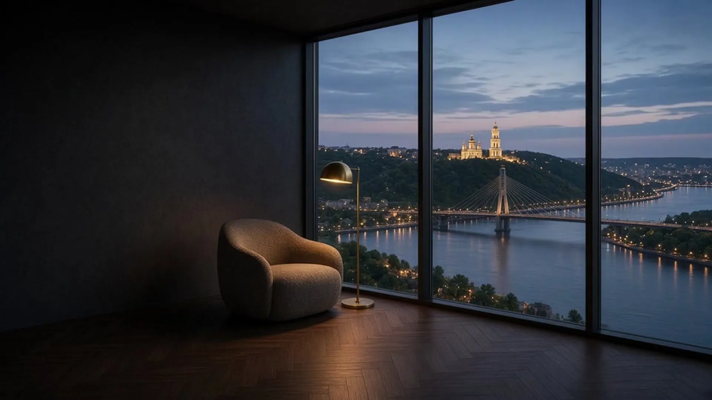
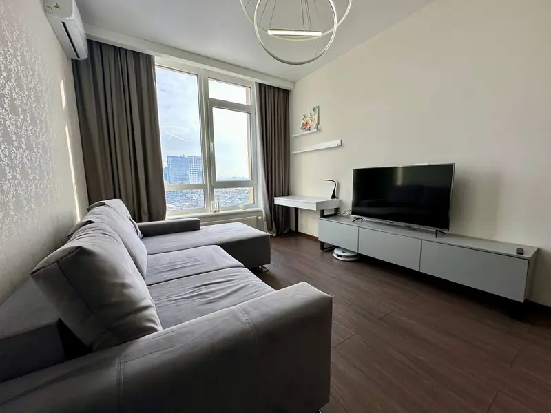
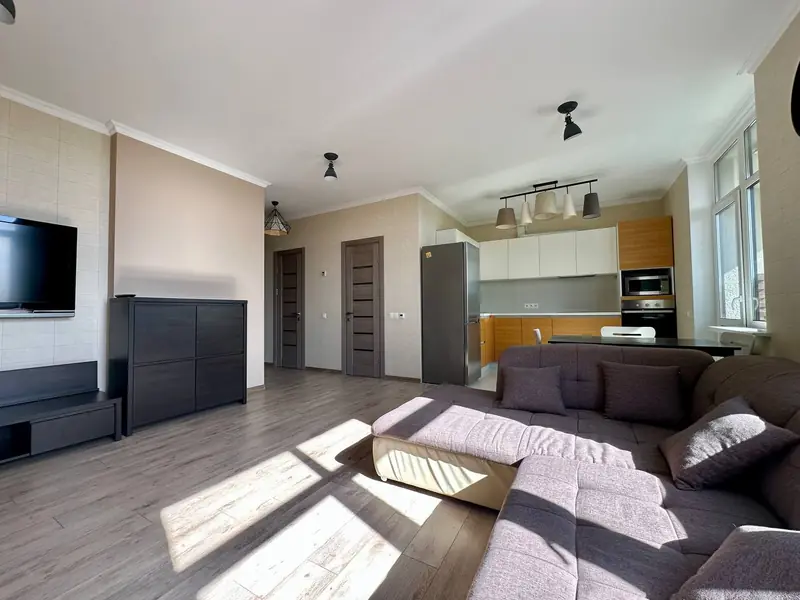
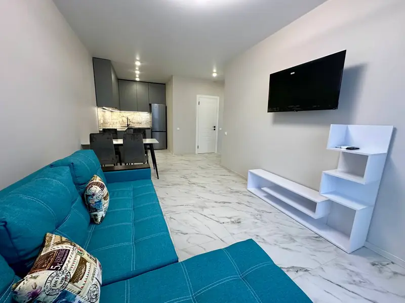
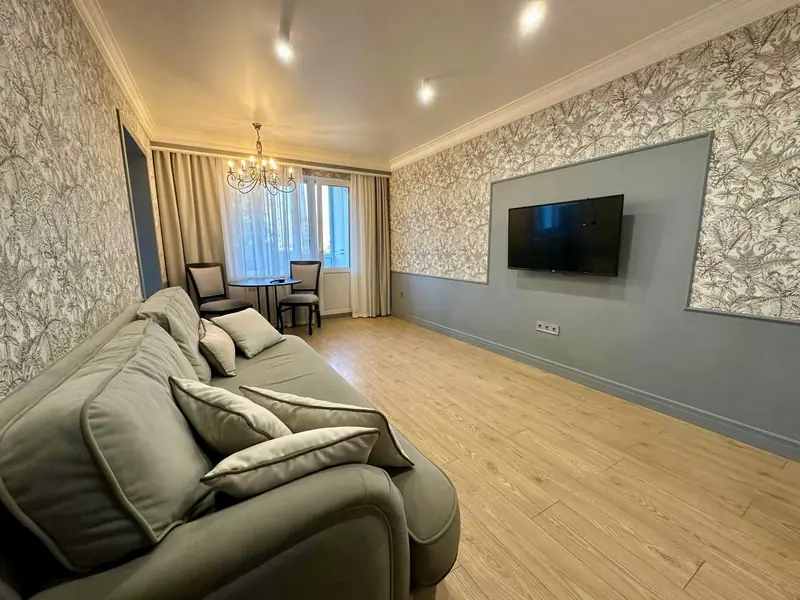
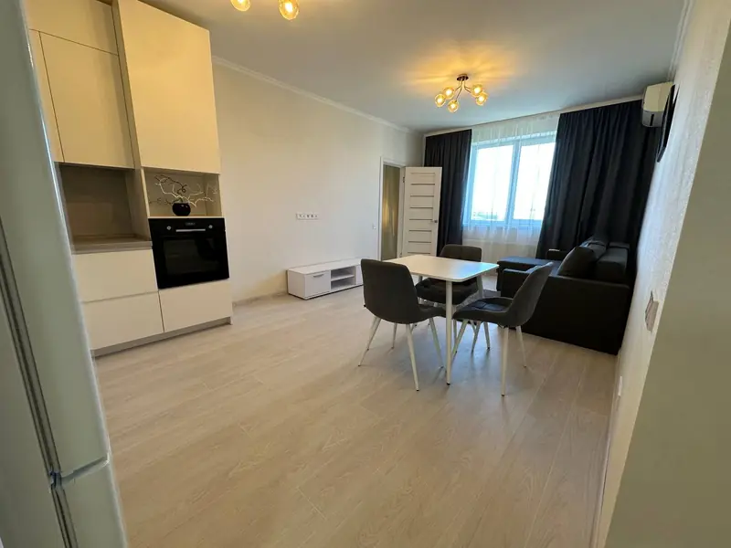

Письмовий план до старту
Погоджені кроки, спосіб подачі та точки ухвалення рішень.

Художнє демо: відео + статичні сцени · не обʼєкт Bridge
Bridge · для власників · Київ
Не загубити її серед тисяч інших.
Гортайте — від першого кадру до плану продажу.
Художнє демо: відео + статичні сцени · не обʼєкт Bridge01 / Підготовка
Підготовка обʼєкта. Чітка подача.
Показуємо простір, світло та логіку квартири.
Художнє демо: відео + статичні сцени · не обʼєкт Bridge02 / Помітність
Реклама має починатися з обʼєкта.
Не просто розмістити. Зрозуміло представити.
Художнє демо: відео + статичні сцени · не обʼєкт Bridge03 / Покази
Організовані покази та робота з покупцями.
На кожному кроці — зрозумілий наступний крок.
Художнє демо: відео + статичні сцени · не обʼєкт Bridge04 / Письмовий план
Погодити кроки до старту.
Підготовка → реклама → покази → переговори.
Художнє демо: відео + статичні сцени · не обʼєкт BridgeБезкоштовна оцінка
Почнімо зі знайомства з вашим обʼєктом.
Безкоштовна оцінка — телефоном або в Instagram.
Художнє демо: відео + статичні сцени · не обʼєкт BridgeЧому Bridge
Погоджені кроки, спосіб подачі та точки ухвалення рішень.
Зрозуміло, кому подзвонити та хто координує процес.
Коротко про звернення, покази та наступні дії.
Перевірка документів і обговорення ризиків до угоди.
років на ринку
проданих обʼєктів
середній термін продажу
ціни продажу до стартової
Робота, яку можна побачити
Спочатку — маршрут продажу, а не випадковий набір дій.

Вибрати ракурси та послідовність, у якій простір зрозумілий.

Подача, яка допомагає покупцю зрозуміти, що він бачить.

Час, координація та відповіді на запитання покупців.

Обговорення пропозицій та наступних кроків із власником.

Подача має значення
Місце для голосу власників
Зрозумілий наступний крок та погоджені рішення.
Зручний звʼязок під час підготовки й показів.
Зрозумілий процес для власника за кордоном.
За назвою — люди
Тут буде справжня історія засновника та його особистий принцип роботи.
Потрібні: погоджене фото, імʼя, роль та коротке звернення.
Прозорість замість гучних обіцянок
Письмово зафіксувати обсяг роботи й відповідальність сторін.
Визначити, що саме є результатом і коли виникає оплата.
Погодити, на яких етапах потрібні агент та юридичні фахівці.
Домовитися про канали звʼязку, доступ до даних і роботу з довіреністю.
До першої розмови
Зателефонуйте або напишіть в Instagram — обговоримо обʼєкт і наступний крок.
Після аналізу обʼєкта та актуальних пропозицій. Стартову ціну погоджуємо з власником.
Строк залежить від попиту, ціни, стану квартири та документів. Фіксованого строку не гарантуємо.
Момент і підстави оплати погоджуємо в договорі до старту.
Спочатку перевіряємо документи, потребу в довіреності та формат участі власника.
Покази координує відповідальний агент. Формат звітності узгоджуємо перед стартом.
Безкоштовна оцінка
Демо-превʼю Bridge. Згенероване відео та дві статичні сцени з панорамуванням / масштабуванням — не безперервний проліт і не реальний обʼєкт Bridge. Реальні інтерʼєрні фото — матеріали Bridge. Приклади показників, відгуків та умов не є підтвердженими фактами.